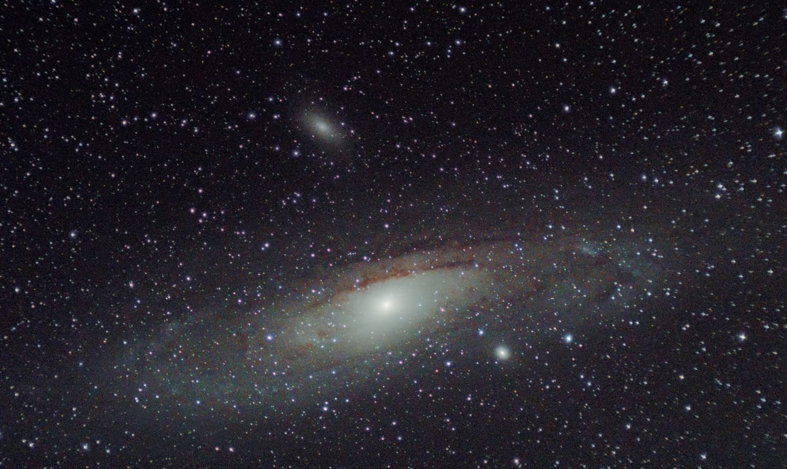

Case 01 · Distance audit · 2025
The gallery that shrank Andromeda
The brief
A national planetarium was three weeks from opening a new cosmology gallery: 40 wall panels, 214 printed figures — distances, ages, sizes, expansion rates — in three language editions. The director's ask was one sentence: “Tell us which of these numbers we will regret.”
Decisions
Every figure was rebuilt from its primary source rather than checked against other secondary text — errors copy each other. Each was graded: correct, correct but misleading (right number, wrong impression), or wrong. The three language editions were audited separately, because translation is where units go to die.
Outcome
11 figures were wrong; 3 more were misleading. The worst: one language edition's Andromeda panel gave the distance as “2.5 million km” — a unit garbled in translation, shrinking the galaxy to roughly six Moon-distances. A second panel printed a z ≈ 1 galaxy's lookback time as if it were its present distance — the exact confusion the explorer on the home page exists to prevent. All were corrected before the panels were reprinted, inside the deadline. The signed audit sheet now sits in the gallery's maintenance file, so the next reprint inherits the corrections instead of the errors.